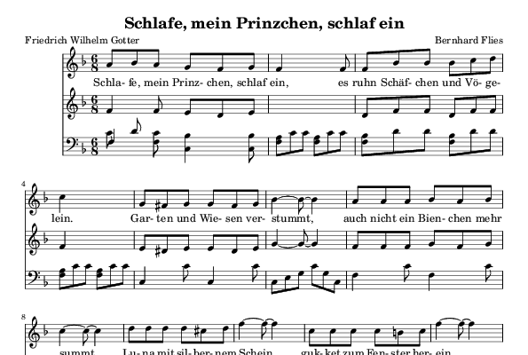

This is a beginning project aiming at logical construction/analysis of musical pieces. It's written in SWI-Prolog, version 7, which comes with a great enhancement – dicts.
Simple example
Load and export Flies's Lullaby (included in the project) as a Lilypond file.
$ ./go.pl
% Started Prolog Documentation server at port 4000
% You may access the server at http://localhost:4000/
...
% All 45 tests passed
...
?- loadData('wiegenlied').
true.
?- exportLy('wiegenlied.ly').
maxCount:144
count:100
count:0
true.
?- halt.
Now run Lilypond to convert it to MIDI and PDF.
$ lilypond wiegenlied.ly

Simple sample
This is how a melody can be described in Prolog:
♪ melody{start:(1, 1, g), relative:(a, 1, 8),
pitch:[0, 1, 0, -1, -2, -1, -2],
len:[1, 1, 1, 1, 1, 1, 2]}.